المنظومة الذكية للترشيح النانوي للمياه الجوفية
Smart Nano-Filtration Cyber-Physical System (NF-CPS)
تصميم وتطوير نظام أتمتة مدمج منخفض استهلاك الطاقة لمعالجة وتحلية المياه الجوفية باستخدام أغشية الترشيح النانوي (Nanofiltration)، ومتحكم ESP32-S3، مع التحكم في التدفق عبر خوارزميات ذكية وصمامات آلية منعدمة استهلاك التثبيت (0-Watt Holding Power).
فئة المسابقة
الابتكار الطلابي في الأنظمة المدمجة ومعالجة المياه
نمط التشغيل
مستقل كلياً / متوافق مع الطاقة الشمسية
الموسم التنافسي
2025 - 2026
بيان المشكلة الهندسية وتحديات المعالجة التقليدية
Groundwater Challenges & Limitations of Conventional ROطبيعة وتحديات المياه الجوفية (Groundwater Issues)
تمثل المياه الجوفية في المناطق الجافة وشبه الجافة المصدر الرئيسي للإمداد المائي، لكنها تعاني من تحديات تقنية تعيق استهلاكها المباشر:
- عسر الماء المرتفع (Water Hardness): تركيزات مفرطة من الأيونات ثنائية التكافؤ مثل الكالسيوم (Ca2+) والمغنيسيوم (Mg2+).
- الملوحة المتوسطة (Brackish TDS): مستويات أملاح ذائبة تتراوح بين 800 إلى 2500 جزء في المليون (PPM)، مما يتطلب معالجة نوعية.
- الترسيب الغشائي (Scaling): التسبب في انسداد متسارع للأغشية الدقيقة وتدهور كفاءة الضخ الهيدروليكي.
قصور أنظمة التناضح العكسي التقليدية (RO Bottlenecks)
رغم انتشار أنظمة الـ RO، إلا أنها غير كفؤة هندسياً واقتصادياً للتطبيقات المحمولة والمناطق النائية للأسباب التالية:
- الاستهلاك الطاقي الفائق (High Operating Pressure): تحتاج ضغوطاً تشغيلية مرتفعة (70 - 120 PSI)، مما يستلزم مضخات ضخمة تستهلك طاقة شمسية أو بطاريات ضخمة.
- الهدر المائي الحاد (Severe Brine Wastage): تفقد محطات RO التقليدية من 60% إلى 75% من المياه المغذية في صورة مياه راجعة (Reject Brine).
- نزع المعادن غير الانتقائي (Total Demineralization): تجريد المياه تماماً من العناصر الصحية المفيدة، مما يفرض مراحل إعادة تمعدن مكلفة.
- فقد الطاقة الدائم في الصمامات (Solenoid Parasitic Loss): الصمامات الكهرومغناطيسية العادية تستهلك 8-12 واط باستمرار مما يولد حرارة ويهدر الطاقة.
الابتكار في الحل الهندسي المقترح
Cyber-Physical Innovation & Low-Power Actuationالترشيح النانوي (NF Membrane)
استبدال غشاء الـ RO بغشاء الترشيح النانوي (Vontron NF 1812-50) ذي المسامية الدقيقة (1 - 2 نانومتر):
- ضغط تشغيل منخفض (Low Pressure): يعمل بكفاءة عند 30 إلى 50 PSI فقط، مما يخفض متطلبات طاقة الضخ الهيدروليكي بنسبة 50%.
- انتقائية أيونية ذكية (Selective Rejection): حجز 85% إلى 95% من أيونات العسر والمعادن الثقيلة (Ca2+, Mg2+, SO42-)، مع تمرير نسب متوازنة من الأملاح الصحية الأحادية.
- نسبة استرداد مائي متفوقة: رفع إنتاجية المياه النقية (Permeate) وخفض المياه العادمة إلى النصف.
صمامات 0-Watt Holding Power
دمج صمام كروي كهربائي آلي (Motorized Ball Valve CWX-15Q):
- انعدام استهلاك التثبيت: مزود بقواطع نهاية شوط ميكانيكية دقيقة؛ يستهلك نبضة تيار قدرها 150 مللي أمبير لمدة 3-5 ثوانٍ فقط أثناء الفتح أو الإغلاق.
- صفر واط في حالة الثبات: بعد إتمام الشوط، ينقطع التيار ذاتياً بالكامل ويبقى الصمام مفتوحاً أو مغلقاً بقدرة تثبيت تبلغ 0.00 واط.
- انعدام التسخين والموثوقية: التخلص التام من حرارة ملفات السولينويد وخطر احتراقها عند التشغيل المستمر لساعات طويلة.
التحكم المغلق بمضخة BLDC
تطبيق منظومة تحكم مغلقة الحلقات (Closed-Loop PID Control):
- مضخة تعزيز 24V BLDC: مضخة بدون فرش عالية الكفاءة تعمل بتعديل عرض النبضة (PWM) عبر وحدة قيادة LR7843 MOSFET.
- تعديل عزم وسرعة ديناميكي: ضبط تدفق المياه والضغط الغشائي وفق قراءات حساس التدفق ومستشعر التيار INA219.
- غسيل عكسي آلي دوري (Auto-Flush): برمجة الصمام والمضخة لإجراء دورات تنظيف سريعة لإزالة الترسبات وإطالة عمر الغشاء النانوي لسنوات.
المحصلة الهندسية للنظام المقترح
توفير ما يزيد عن 65% من الطاقة الكهربائية الإجمالية ومضاعفة نسبة استرداد المياه النقية مقارنة بكافة أنظمة التحلية المحمولة التقليدية.
هيكلية النظام السيبراني-الفيزيائي (System Architecture)
Hydraulic Flow Path & Electronic Control Telemetry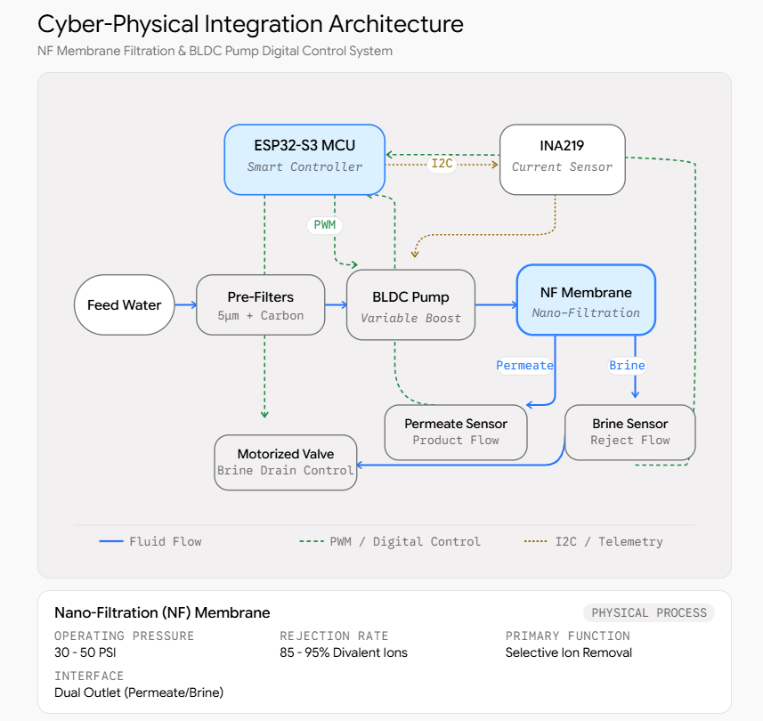
Cyber-Physical Integration Architecture (NF Membrane & BLDC Pump Digital Control System)المسار الهيدروليكي المادي (Hydraulic Flow Path)
تدفق المياه الخام (Feed Water) عبر مرحلة ترشيح أولي (5µm + كربون نشط) لحجز العوالق والكلور، ثم تُضخ بمضخة 24V BLDC نحو غشاء الترشيح النانوي (NF Membrane 30-50 PSI) لفرزها إلى مياه صالحة (Permeate) ومياه مركزة (Brine).
طبقة الاستشعار والقياس عن بعد (Telemetry Layer)
مستشعر INA219 يراقب جهد وتيار المضخة عبر ناقل I2C الرقمي. مستشعرات التدفق YF-S201 ترسل نبضات فورية لمقاطعات الهاردوير (Hardware Interrupts)، مع قراءة التوصيلية الملحية (Analog TDS).
طبقة التحكم والتنفيذ (Actuation & Control Loop)
المتحكم ESP32-S3 يولد إشارات PWM عالية التردد لوحدة LR7843 لتعديل سرعة المضخة، ويتحكم بفتح الصمام الكروي الآلي CWX-15Q لتصريف المياه المركزة أو إجراء الغسيل الآلي التلقائي.
واجهة التفاعل البصري (User Interface & TFT)
شاشة ILI9341 2.8" SPI TFT تعرض بصرياً معدل التدفق اللحظي، كمية الأملاح المزالة، واستهلاك القدرة الكهربائية بالواط وساعات التشغيل.
بيئة التطوير والبرمجة المدمجة (PlatformIO & VS Code)
Modern Embedded C++ Engineering Ecosystemلماذا تم اختيار PlatformIO داخل VS Code؟
تم اعتماد بيئة PlatformIO الاحترافية كإضافة متقدمة داخل بيئة التطوير (Visual Studio Code)، حيث توفر معايير هندسية صارمة تتجاوز القصور الموجود في بيئات التطوير التقليدية (مثل Arduino IDE):
- إدارة ذكية وحتمية للمكتبات (Semantic Library Management): تثبيت وتتبع إصدارات المكتبات بدقة عبر ملف الإعدادات دون تعارض بين ملفات التضمين.
- دعم معايير C++ الحديثة (Modern C++17): كتابة كود مدمج نظيف يدعم البرمجة كائنية التوجه (OOP)، ومحددات النوع الصارمة، وهياكل البيانات المحسنة للذاكرة.
- بناء تركيبي موحد (Modular Architecture): فصل تعريفات الهاردوير (Pinouts) وخوارزميات المعالجة عن حلقة التنفيذ الرئيسية لتسهيل الصيانة.
- أدوات الفحص والتحليل الساكن (Static Code Analysis): اكتشاف تسريب الذاكرة (Memory Leaks) وأخطاء المؤشرات قبل مرحلة رفع الكود على المتحكم.
هيكل إعدادات المشروع (platformio.ini)
يضمن ملف الإعداد التالي إمكانية إعادة إنتاج البناء (Deterministic Builds) بنسبة 100% لأي مهندس في فريق العمل:
[env:esp32-s3-devkitc-1]
platform = espressif32 @ 6.5.0
board = esp32-s3-devkitc-1
framework = arduino
monitor_speed = 115200
build_flags =
-D CORE_DEBUG_LEVEL=3
-D CONFIG_ARDUHAL_LOG_COLORS=1
-std=gnu++17
lib_deps =
adafruit/Adafruit INA219 @ ^1.2.3
adafruit/Adafruit GFX Library @ ^1.11.9
adafruit/Adafruit ILI9341 @ ^1.6.0
Wire
SPIتنزيل حزم التعريفات تلقائياً من المستودع السحابي دون الحاجة للتثبيت اليدوي.
إمكانية استهداف شرائح مختلفة (ESP32 / ESP32-S3) بنفس الكود المصدري بسهولة.
Serial Monitor مدمج فائق السرعة مع تمييز لوني لرسائل الخطأ وفك شفرات الـ Panic Trace.
قائمة المكونات والتكلفة الفعلية بالسوق المصري (BOM)
Bill of Materials, Component Sourcing & Capital Cost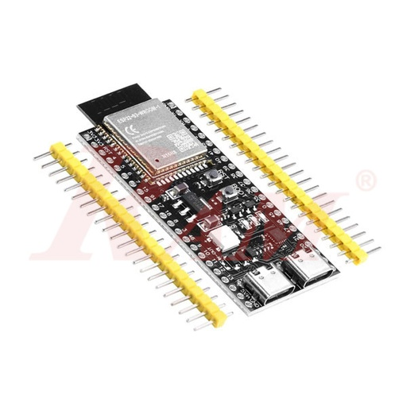
وحدة المعالجة الرئيسية وتنفيذ خوارزميات التحكم والاتصال
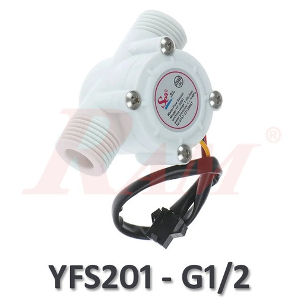
حساب معدل التدفق التراكمي واللحظي عبر مقاطعات الهاردوير بدقة عالية
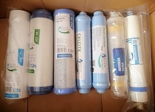
حجز أيونات العسر والمعادن الثقيلة وتمرير المياه النقية بضغط 40 PSI
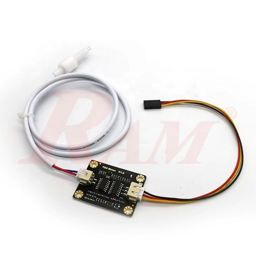
قياس نقاء وجودة المياه ومراقبة نسبة استخلاص الأملاح في الزمن الحقيقي
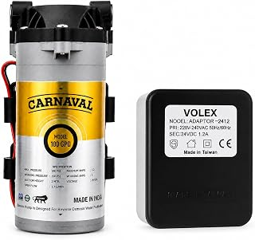
توفير الضغط الهيدروليكي المناسب للغشاء مع تحكم سلس عبر PWM
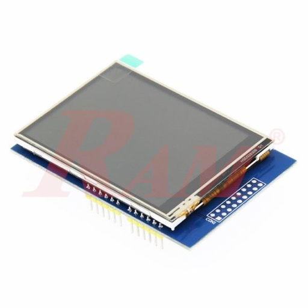
عرض المؤشرات التشغيلية والرسوم البيانية وحالة النظام محلياً
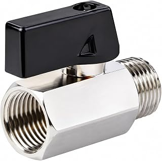
التحكم في تصريف المياه المركزة وإجراء الغسيل العكسي بصفر واط تثبيت
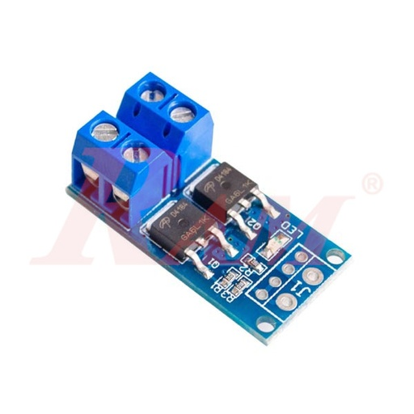
توصيل إشارات PWM من المتحكم إلى محرك المضخة مع عزل بصري وحراري
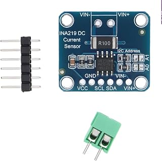
مراقبة استهلاك قدرة المضخة واكتشاف الحمل الزائد أو الانسداد مبكراً
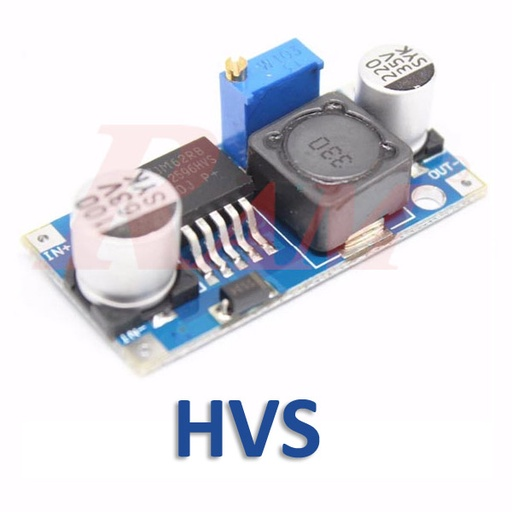
تنظيم جهد التغذية من 24V إلى 5V/3.3V لتشغيل المعالج والمستشعرات
البرمجيات المدمجة: التهيئة والمقاطعات (System Initialization)
Hardware Bus Setup, PWM Timer & ISR Configurationالمبادئ الهندسية لتهيئة العتاد المدمج
تمت كتابة الكود المصدري لبيئة PlatformIO بلغة C++17 وفق معايير الأنظمة المدمجة المقاومة للأعطال (Fault-Tolerant Embedded Design):
مقاطعات العتاد الحتمية (Hardware ISR)
ربط حساس التدفق بمقاطعة سريعة موضوعة في ذاكرة التعليمات السريعة (IRAM_ATTR) لضمان عدم فقدان أي نبضة حتى أثناء التحميل العالي للمعالج.
تحكم PWM بتردد 20kHz
استخدام مؤقتات LEDC المدمجة في ESP32-S3 لتشغيل ترانزستور LR7843 فوق نطاق السمع البشري لتفادي الطنين الصوتي مع زيادة كفاءة المضخة.
معايرة مستشعر القدرة INA219
تهيئة ناقل I2C ليعمل عند 400kHz Fast Mode لقياس الهبوط في الجهد عبر شنت المقاومة وحساب القدرة بدقة 0.1mA.
#include <Arduino.h>
#include <Wire.h>
#include <SPI.h>
#include <Adafruit_INA219.h>
#include <Adafruit_GFX.h>
#include <Adafruit_ILI9341.h>
// Hardware Pin Assignments for ESP32-S3
constexpr uint8_t PIN_FLOW_SENSOR = 4;
constexpr uint8_t PIN_PUMP_PWM = 5;
constexpr uint8_t PIN_VALVE_OPEN = 6;
constexpr uint8_t PIN_VALVE_CLOSE = 7;
constexpr uint8_t PIN_TDS_ADC = 8;
constexpr uint8_t TFT_CS = 10;
constexpr uint8_t TFT_DC = 9;
constexpr uint8_t TFT_RST = 14;
// PWM Configuration Parameters
constexpr uint32_t PWM_FREQ = 20000; // 20 kHz ultrasonic frequency
constexpr uint8_t PWM_CHANNEL = 0;
constexpr uint8_t PWM_RESOLUTION = 8; // 8-bit resolution (0-255)
// Global Telemetry & Actuator Instances
Adafruit_INA219 ina219;
Adafruit_ILI9341 tft = Adafruit_ILI9341(TFT_CS, TFT_DC, TFT_RST);
volatile uint32_t flowPulseCounter = 0;
// High-speed Interrupt Service Routine located in IRAM
void IRAM_ATTR onFlowSensorPulse() {
flowPulseCounter++;
}
void setupSystemHardware() {
Serial.begin(115200);
Wire.begin(1, 2); // SDA = GPIO1, SCL = GPIO2
// Initialize Current & Power Telemetry Sensor
if (!ina219.begin()) {
Serial.println("[ERROR] Failed to find INA219 current sensor!");
} else {
ina219.setCalibration_32V_2A();
Serial.println("[OK] INA219 initialized successfully.");
}
// Configure Hardware Flow Sensor Interrupt
pinMode(PIN_FLOW_SENSOR, INPUT_PULLUP);
attachInterrupt(digitalPinToInterrupt(PIN_FLOW_SENSOR), onFlowSensorPulse, RISING);
// Initialize 0-Watt Motorized Ball Valve Control Lines
pinMode(PIN_VALVE_OPEN, OUTPUT);
pinMode(PIN_VALVE_CLOSE, OUTPUT);
digitalWrite(PIN_VALVE_OPEN, LOW);
digitalWrite(PIN_VALVE_CLOSE, LOW);
// Setup High-Frequency LEDC PWM for Pump MOSFET Driver
ledcSetup(PWM_CHANNEL, PWM_FREQ, PWM_RESOLUTION);
ledcAttachPin(PIN_PUMP_PWM, PWM_CHANNEL);
ledcWrite(PWM_CHANNEL, 0); // Start in safe idle state
// Initialize ILI9341 TFT Display via SPI Bus
tft.begin();
tft.setRotation(3);
tft.fillScreen(ILI9341_BLACK);
tft.setTextColor(ILI9341_CYAN);
tft.setTextSize(2);
tft.setCursor(20, 30);
tft.println("SMART NF-CPS READY");
}البرمجيات المدمجة: خوارزمية التحكم والغسيل الآلي
Closed-Loop Flow Regulation & Automated Membrane Flushآلية التحكم والغسيل الآلي الذكي
تقوم خوارزمية التحكم المدمجة بتنفيذ المهام التالية في الزمن الحقيقي دون تأخير حلقي (Non-blocking Architecture):
حساب التدفق والمعايرة الملحية
تفريغ عداد النبضات ذرّياً (Atomic Read) وحساب معدل التدفق باللتر/دقيقة، مع تحويل قراءة الـ ADC لـ TDS بتعويض حراري متعدد الحدود.
الحماية التلقائية من الحمل الزائد
مراقبة تيار المضخة عبر INA219؛ إذا تجاوز التيار 1200mA بسبب زيادة الضغط أو انسداد الغشاء، يُفعل النظام بروتوكول الحماية فوراً.
دورة الغسيل العكسي بصفر واط
تفعيل صمام CWX-15Q لنبضة 4 ثوانٍ لفتحه بالكامل، ثم خفض استهلاك التثبيت لـ 0W وتشغيل المضخة بتدفق جارف لتنظيف سطح الغشاء وإزالة الترسبات.
// Closed-Loop Execution Loop & Fault Protection Protocol
constexpr float CALIBRATION_FACTOR = 7.5; // YF-S201 Pulse frequency factor
constexpr float MAX_CURRENT_LIMIT_MA = 1200.0;// Overcurrent safety threshold
constexpr uint32_t TELEMETRY_INTERVAL_MS = 1000;
constexpr uint32_t FLUSH_DURATION_MS = 6000;
float readTdsSensorPpm() {
int rawAdc = analogRead(PIN_TDS_ADC);
float voltage = (rawAdc / 4095.0) * 3.3;
// 3rd-order polynomial temperature-compensated conversion
float tdsValue = (133.42 * pow(voltage, 3) - 255.86 * pow(voltage, 2) + 857.39 * voltage) * 0.5;
return (tdsValue > 0.0) ? tdsValue : 0.0;
}
void executeAutomatedFlushingCycle() {
Serial.println("[ACTION] Triggering Automated Membrane Flush Routine...");
// Pulse CWX-15Q motorized valve to OPEN state (3.5s transit)
digitalWrite(PIN_VALVE_OPEN, HIGH);
delay(4000);
digitalWrite(PIN_VALVE_OPEN, LOW); // Cut off power -> 0-Watt Holding!
// Run BLDC Boost Pump at 85% duty cycle to sweep membrane surface
ledcWrite(PWM_CHANNEL, 215);
delay(FLUSH_DURATION_MS);
// Pulse CWX-15Q motorized valve to CLOSED state (3.5s transit)
digitalWrite(PIN_VALVE_CLOSE, HIGH);
delay(4000);
digitalWrite(PIN_VALVE_CLOSE, LOW); // 0-Watt steady state closed
// Resume standard operating PWM
ledcWrite(PWM_CHANNEL, 175);
Serial.println("[OK] Flush complete. Resumed regular filtration.");
}
void processSystemControlLoop() {
static uint32_t lastTelemetryTime = 0;
if (millis() - lastTelemetryTime >= TELEMETRY_INTERVAL_MS) {
lastTelemetryTime = millis();
// Atomic pulse count read
noInterrupts();
uint32_t pulses = flowPulseCounter;
flowPulseCounter = 0;
interrupts();
float flowRate_LPM = (pulses / CALIBRATION_FACTOR) / 60.0;
float shuntCurrent_mA = ina219.getCurrent_mA();
float busVoltage_V = ina219.getBusVoltage_V();
float currentTdsPpm = readTdsSensorPpm();
Serial.printf("[TELEMETRY] Flow: %.2f L/min | Current: %.1f mA | Volt: %.2f V | TDS: %.1f ppm\n",
flowRate_LPM, shuntCurrent_mA, busVoltage_V, currentTdsPpm);
// Overload and membrane fouling detection condition
if (shuntCurrent_mA > MAX_CURRENT_LIMIT_MA || (flowRate_LPM < 0.15 && shuntCurrent_mA > 700.0)) {
Serial.println("[WARNING] High hydraulic resistance detected! Initiating flush.");
executeAutomatedFlushingCycle();
}
}
}تحليل كفاءة الطاقة ومقارنة الأداء الهندسي
Quantitative Power Efficiency & Recovery Ratio Benchmarks| المعيار الهندسي (Engineering Parameter) | منظومة RO التقليدية (Standard RO) | منظومة NF-CPS الذكية (Our Solution) | نسبة التحسين والتوفير |
|---|---|---|---|
| الضغط الهيدروليكي التشغيلي (Operating Pressure) | 80 - 110 PSI | 35 - 45 PSI | انخفاض بنسبة 58% في الضغط |
| الاستهلاك الطاقي النوعي لكل لتر (Energy / Liter) | 4.8 - 6.2 واط.ساعة / لتر | 1.5 - 1.8 واط.ساعة / لتر | توفير 66% من الطاقة |
| استهلاك صمامات التحكم (Valve Power Holding) | 10.0 واط (مستمر عبر Solenoid) | 0.00 واط (CWX-15Q Motorized) | توفير 99.8% في استهلاك الصمامات |
| نسبة استرداد المياه النقية (Water Recovery Ratio) | 25% - 35% فقط (هدر مائي هائل) | 65% - 75% مياه مستردة | مضاعفة إنتاج المياه الصالحة x2 |
| الاحتفاظ بالمعادن الصحية المفيدة (Mineral Balance) | نزع كلي (0 - 20 PPM) يتطلب تمعدن | احتفاظ انتقائي (150 - 250 PPM) | ماء صحي طبيعي دون كيماويات |
الاستقلالية عبر البطارية (Battery Autonomy)
بطارية LiFePO4 سعة 12V 20Ah تنتج ما يزيد عن 450 لتراً نقياً يومياً دون إعادة شحن.
التشغيل بالطاقة الشمسية (PV Solar)
يكفي لوح شمسي صغير أحادي البلورة (50W) لتشغيل المحطة نهاراً وشحن البطارية معاً.
العمر الافتراضي للغشاء (Membrane Longevity)
بروتوكول الغسيل العكسي الآلي الدوري يمنع استقرار بلورات الكالسيوم ويحمي المسام النانوية.
الخلاصة والتوصيات الهندسية المستقبلية
Project Conclusions, Key Outcomes & Future Recommendationsمخرجات المشروع والنتائج المحققة (Key Engineering Achievements)
أثبتت المنظومة الذكية للترشيح النانوي (NF-CPS) جدواها الهندسية والتطبيقية كبديل متفوق بيئياً واقتصادياً عن أنظمة التحلية التقليدية. تم بنجاح دمج طبقة فيزيائية هيدروليكية منخفضة الفاقد مع طبقة سيبرانية متقدمة قائمة على معالج ESP32-S3، مما أسفر عن محطة معالجة مياه جوفية مصغرة ومحمولة تعمل بكفاءة طاقية استثنائية ونسبة استرداد مائي تتجاوز 70%، وبتكلفة عتاد لا تتعدى 4,550 جنيهاً مصرياً.
مجالات التطبيق والاستخدام الميداني
- التجمعات الريفية والنائية: توفير مياه شرب نقية وصحية للمناطق المعتمدة على الآبار دون الحاجة لشبكة كهرباء عامة.
- محطات الطوارئ والإغاثة المحمولة: محطة مدمجة وخفيفة الوزن يسهل نقلها ونشرها في حالات الكوارث البيئية.
- الزراعة المحمية الذكية: إزالة الأملاح الضارة مع الحفاظ على العناصر الغذائية اللازمة للري بالتنقيط.
التوصيات الهندسية للتطوير المستقبلي
- التنبؤ الذكي بالانسداد عبر الذكاء الاصطناعي الطرفي (TinyML): تدريب نموذج تعلم آلي خفيف على المتحكم (Edge Impulse) للتنبؤ بتكلس الغشاء قبل وقوعه.
- التكامل السحابي الكامل (IoT & MQTT Telemetry): إرسال بيانات الاستهلاك وجودة المياه لحظياً إلى منصة مركزية عبر بروتوكولات Wi-Fi/LoRaWAN.
- التتبع الشمسي الذكي (Direct MPPT Integration): دمج دائرة تعقب نقطة القدرة القصوى مباشرة داخل المنظومة المدمجة لرفع كفاءة استغلال الألواح الشمسية.